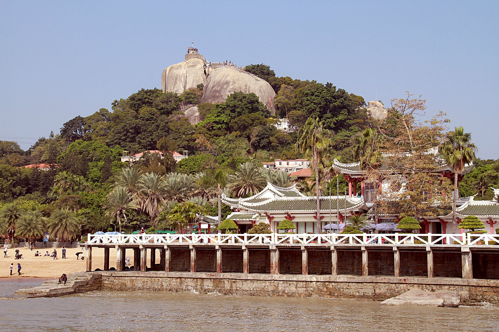
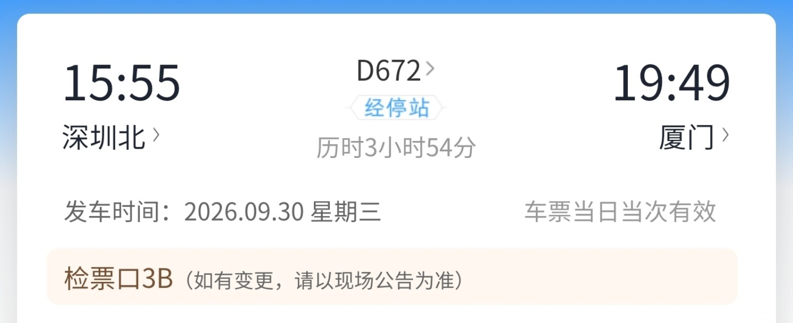
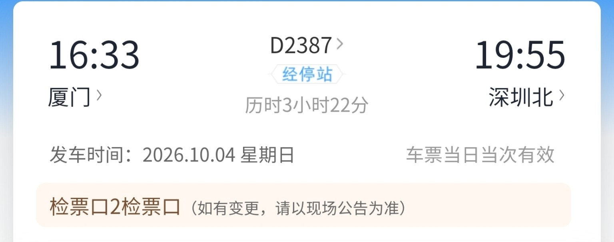

D672
15:5519:49
深圳北 → 厦门站
从文灶出发，慢走海岛、老城与山海。路线按动线安排，热门时段留足排队和休息空间。

点选日期查看详情。路线图是动线示意，不按地理比例绘制。
14家顺路候选，按片区组合。两人先点小份，一顿尝两三样就很满足。
早餐从沙茶面或烧肉粽开始；鼓浪屿吃鱼丸、麻糍；沙坡尾把芋包留给午后；八市周边用五香卷和满煎糕收尾。海鲜正餐看明码标价，先问重量与加工费。
人均为点单预算参考。国庆营业与菜价以门店现场为准；菜式实拍不代表推荐门店出品。
车票原图，可点开放大查看。
深圳北 → 厦门站
厦门站 → 深圳北
夏商·怡翔酒店（厦门中山路文灶地铁站店）
10月4日退房后，先向酒店确认行李寄存方式，再进行半日老城步行。

09:35左右到东渡客运码头，预留安检与候船时间。10:30出发抵达三丘田。返航码头与班次按厦门轮渡当日公告执行；18:00后返程通常到厦门轮渡码头，便于接中山路。
2026年起参观采用线上登记与随机摇号。若选择10月2日入校，按官方规则提前3个自然日登记，具体时段以中签结果为准；未入校就把时间给白城与沙坡尾。
雨林世界国庆雾森时段以官网为准，现行公布为09:30—11:30、14:30—16:30。索道遇强风、雷雨可能停运，预约与运行情况看官方/订单页。
每天留一点空白，排队和天气变化也不影响好心情。
身份证、充电宝、运动鞋、帽子、防晒、折叠伞、水杯和薄外套。鼓浪屿当天把大件行李留在酒店。
缩短海边停留；植物园与索道看天气调整。索道停运就提前去八市周边。返程日下雨可取消老城步行。
两人一碗主食加两三样小吃，先少点再加。海鲜下单前问清按斤或按只、重量及加工费。